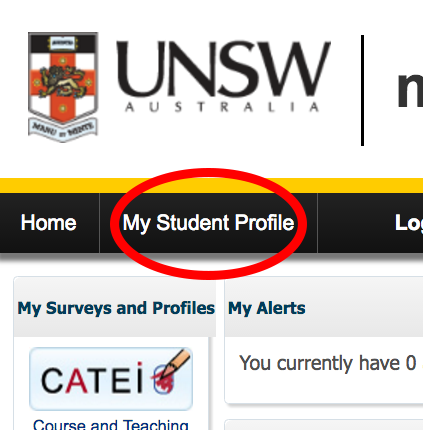
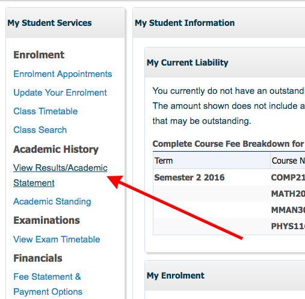
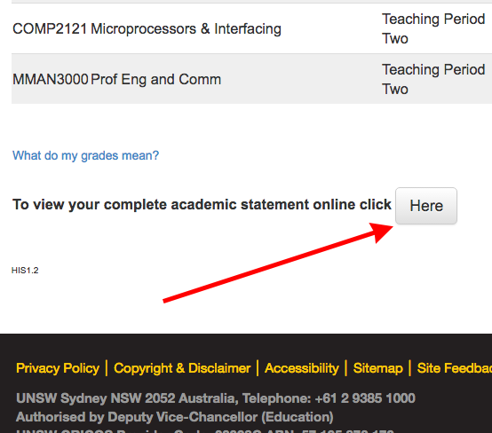
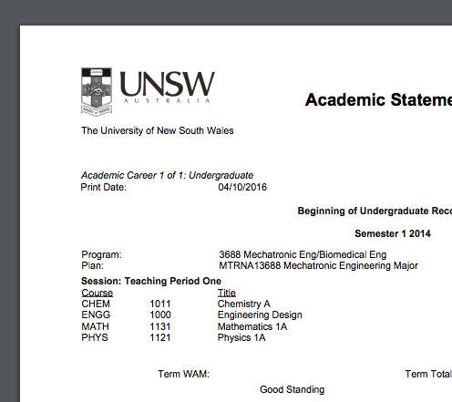
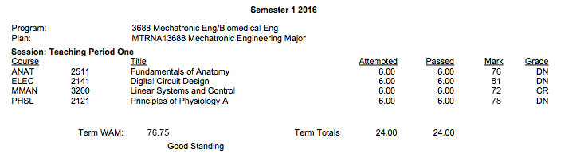

How to use the calculator
Getting your results from the uni
You can get your complete list of your results in the form of a PDF document from UNSW, you can put the data from this document into the calculator. Below are the steps to get this document.
Step 1
Step 2
Step 3
Step 4
Putting it into the calculator
You will see that each subject has a certain number of units of credit assigned to it. The bigger this number, the more it counts to the wam. Something that is neat is that rather than inputing every single subject you have done into the calculator, you can simply put in the whole semester! On the document You will see a WAM given for each semester and the number of units of credit the semester is worth. You can put this in as an entry in the calculator. This would be the equivalent of putting each individual subject in the semester into the subject.
An example
I am going to use the sample semester seen above. You can either put in each subject or put in the whole semester you can see this below.